Обезопасить. Удержать. Сохранить.
Исследовательский комплекс Фонда SCP, предназначенный для изучения аномальных объектов,
проведения экспериментов и обеспечения их безопасного содержания.
сервер SCP: Containment Breach 2, созданный для тех, кто хочет погрузиться в атмосферу Фонда SCP,
исследовать комплекс и стать частью его истории.
Здесь игрокам предстоит взаимодействовать друг с другом,
выполнять свои задачи,
соблюдать правила и принимать решения, которые могут повлиять на ход событий.
Уникальные роли,
подразделения и различные игровые ситуации позволяют каждому найти своё место внутри комплекса.
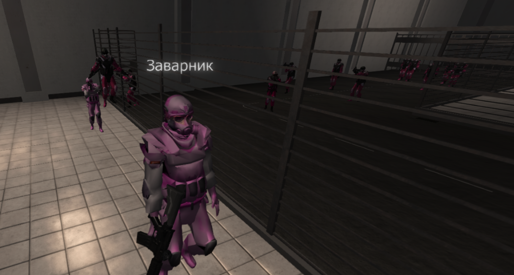
В SCP: Containment Breach 2 каждый игрок играет свою роль в жизни комплекса.
Исследуйте неизвестное, выполняйте поставленные задачи,
взаимодействуйте с другими участниками
и принимайте решения в самых непредсказуемых ситуациях.
От сотрудников Фонда до заключённых и аномальных объектов —
каждый участник влияет на происходящее внутри комплекса.
В Laboratory каждый игрок становится частью большого комплекса.
Выберите сторону, выполняйте поставленные задачи и взаимодействуйте с другими участниками проекта.
Сотрудники Фонда, службы безопасности, научный персонал, заключённые и другие подразделения
— у каждого своя роль,
обязанности и место в происходящих событиях.
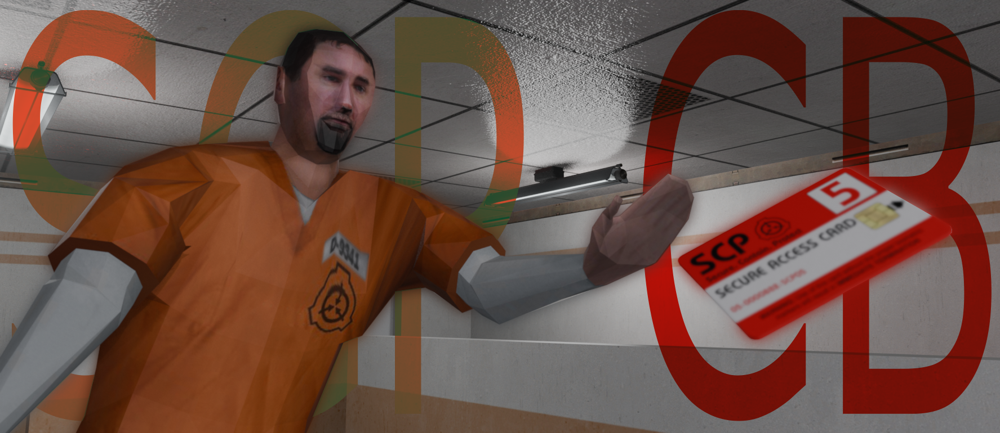
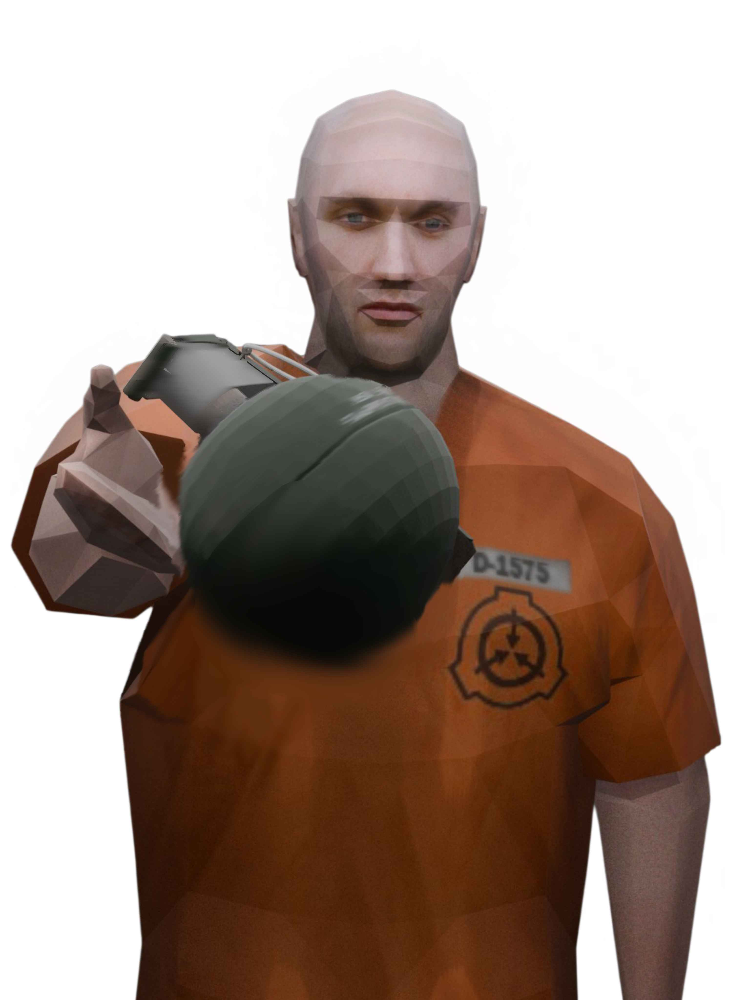
Laboratory — это место, где действия каждого игрока имеют значение.
Чтобы сохранить атмосферу проекта и комфортное взаимодействие,
все участники должны соблюдать установленные правила.
Уважайте других игроков, соблюдайте правила сервера и помните:
ваша роль — это часть общей истории.
Узнайте, что делает проект особенным и почему тысячи игроков возвращаются в комплекс снова.
Laboratory — это не просто игровой сервер, а целый мир со своей атмосферой,
системой взаимодействия и множеством возможностей. Здесь каждый игрок может найти для себя подходящую роль,
участвовать в событиях, исследовать комплекс и становиться частью его истории.
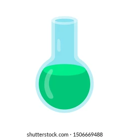
Изучение аномальных объектов и явлений в стенах Laboratory.
Контроль доступа к защищённым зонам и закрытой информации.
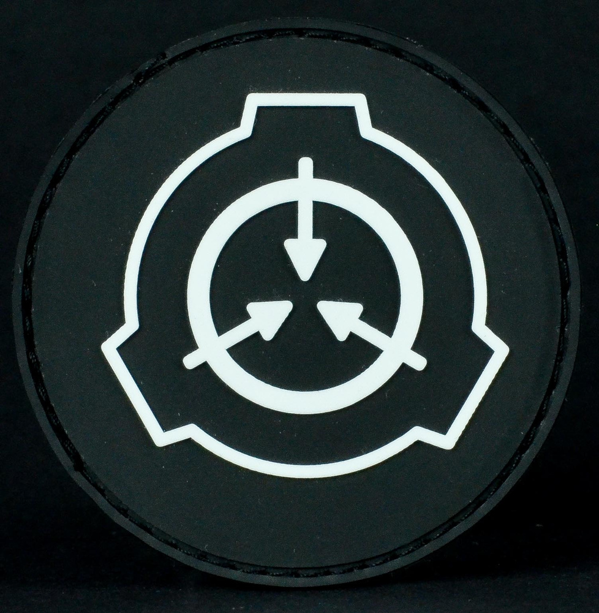
Надёжное содержание аномальных объектов под постоянным наблюдением.
Учёные и сотрудники, обеспечивающие работу исследовательского комплекса.
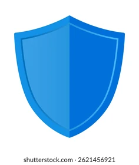
Защита персонала и поддержание порядка на территории комплекса.
Проведение контролируемых исследований свойств SCP-объектов.
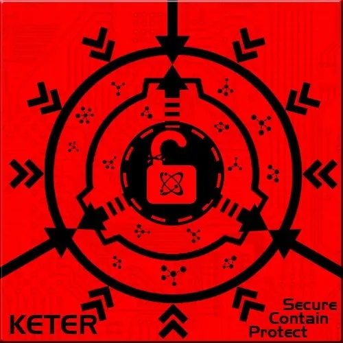
Регистрация опасных событий и нарушений внутри Laboratory.

Хранение документов, отчётов и секретной информации комплекса.
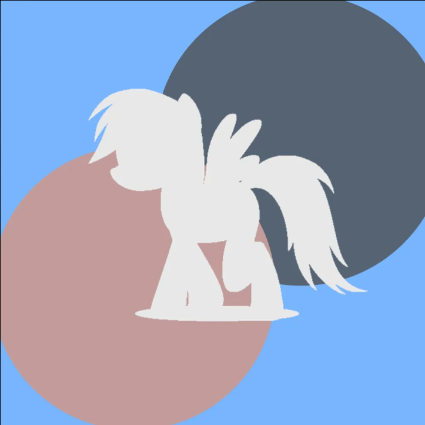
BelaRain является текущим лидером проекта Laboratory.
Он превосходно справляется со своими задачами
по управлению проекта а также его развитием.
Этот человек обладает не только лидерскими качествами,
но и отлично умеет писать код игры и разрабатывать плагины.
На данный момент BelaRain планирует открыть свой сервер помимо существующего Laboratory
и надеемся что у него это получиться
и мы увидим рождение Rebirth.
Конечно у этого человека есть команда которая всегда поддерживает
его во всех делах и помогают управляться проектом Laboratory.
Желаем успехов в работе и начинаниях!😁
В каждом раунде вас ждут новые эмоции, неожиданные события и встречи с SCP-объектами
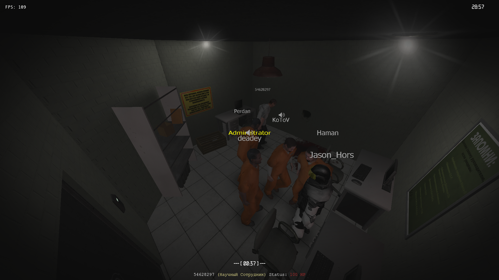
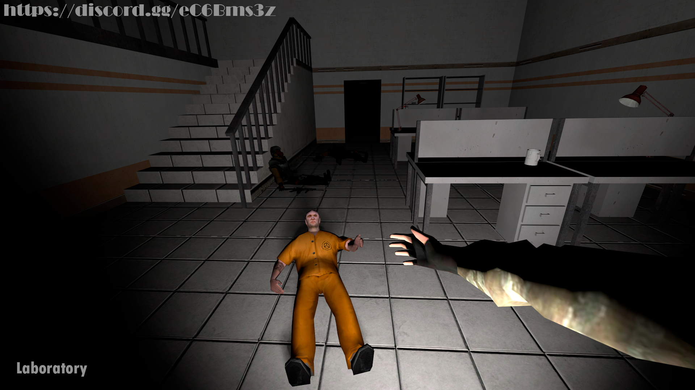
Узнайте больше о проекте, особенностях игрового процесса и атмосфере Laboratory.
Здесь вы найдёте полезную информацию о сервере, его подразделениях, правилах и способах подключения.
Погрузитесь в мир аномальных исследований и станьте частью жизни комплекса.
Здесь показаны основатели и нынешний персонал проекта которые своим трудом развивают(ли) проект.
Вклад этих людей значительно улучшил проект и он стал стабильным, развитым проектом.
Нынешний лидер
и кодер проекта
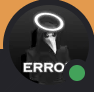
Основатель проекта
Бывший кодер проекта
Бывший менеджер
проекта
Нынейний Глава
администрации
Нынешний Глава модерации
и Глава ивентологии
Бывший Глава
администрации
В Laboratory вас ждёт интересный геймплей а также приятное комьюнити. Станьте частью истории Laboratory и играйте в удовольствие. Желаем прятно провести время!